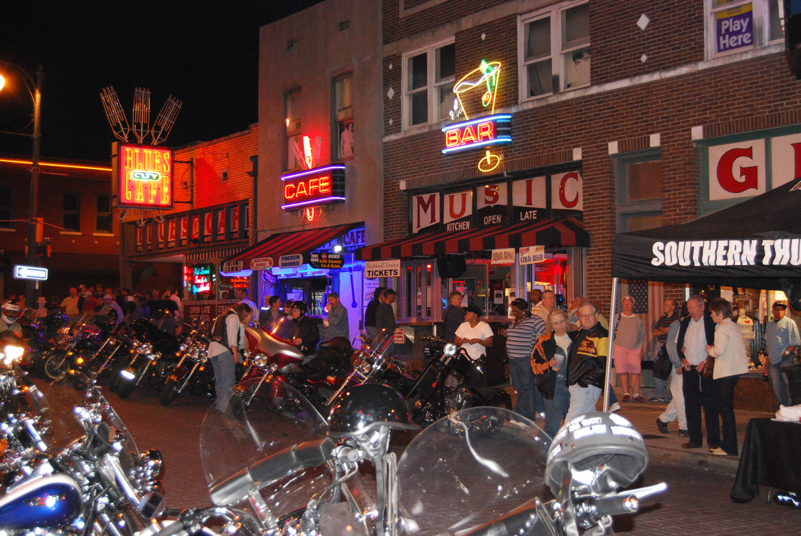
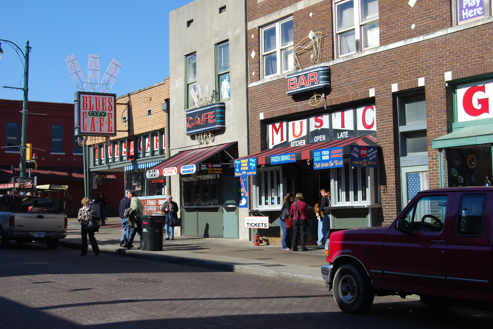
Great, GREAT Bluesman
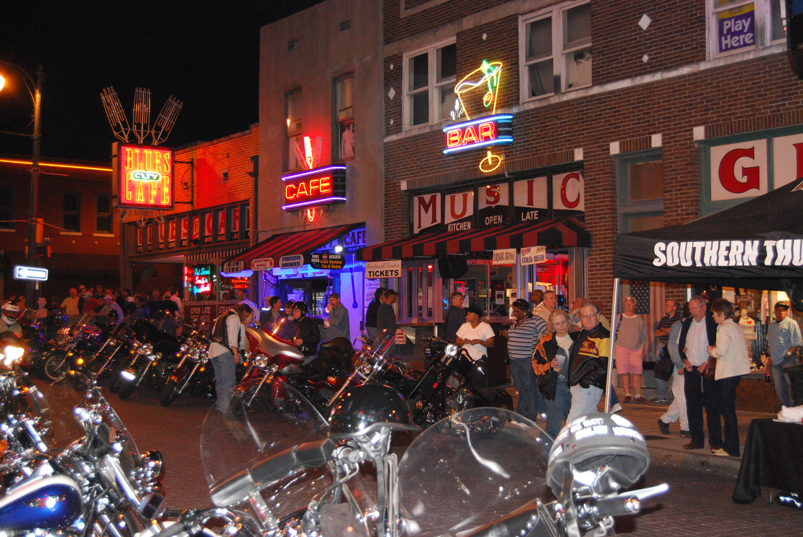
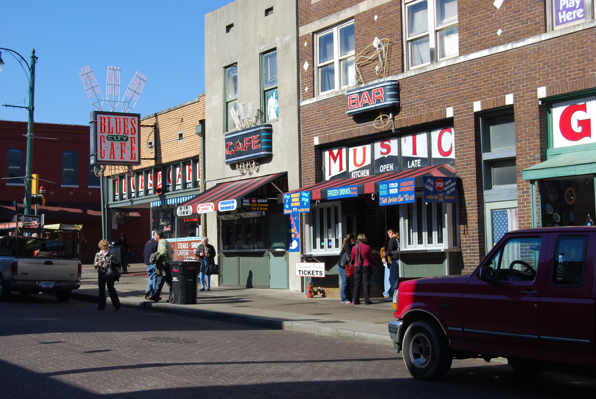
Great, GREAT Bluesman
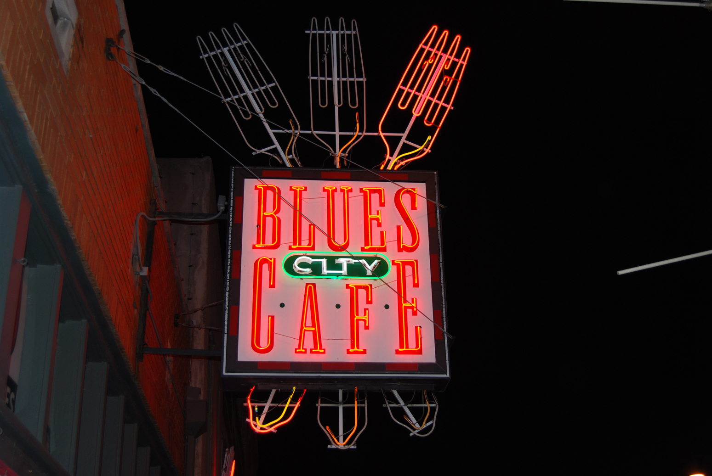
Great Dining And Entertainment
Whenever we go to Memphis, we always try to make it to the Blues City Cafe. The food is fabulous and the entertainment is second to none. They have a nice dining room with a connected bar and stage that are truly the heart and soul of Memphis. We have seen countless acts at this venue, that are always great.
For dinner, we always order the catfish and ribs. There is none better in the world. Believe me. Truth be told, we’d probably go to Memphis just for that.
They have a great selection of drinks, including beers from the local area. Can’t be beat. It’s located downtown, on the famous street of the blues: Beale Street.
A
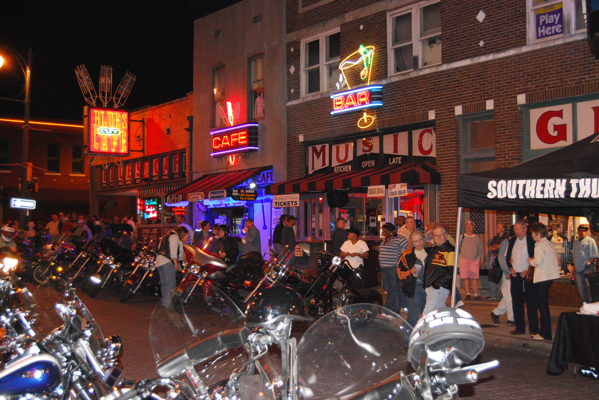
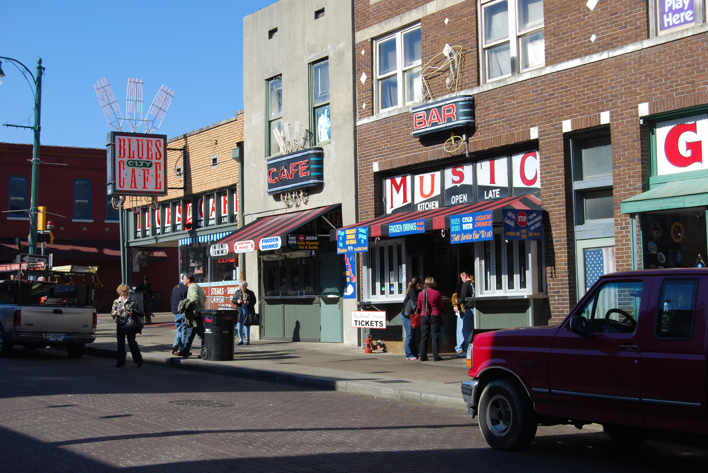
Great, GREAT Bluesman
Blind Mississippi Morris is a world renown Bluesman, that we had the honor of watching him perform in a real Blues Club; while eating ribs and catfish, drinking beer; talk about heaven.
Mississippi Morris is one of the greatest harmonica players in the world. He has won numerous awards and played with the biggest names in the Music Business. His music is down home blues, that excellent, doesn’t begin to describe his art. His band is excellent. To say the least, we had a fantastic evening at the Blues City Cafe. If you ever have the chance; well, you know.
E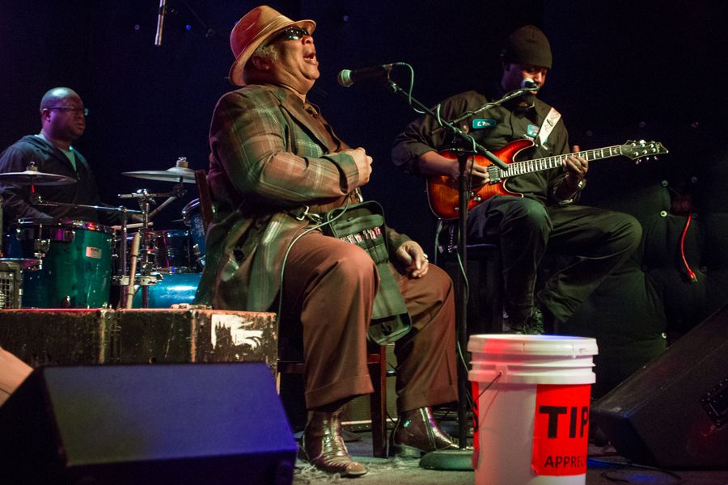
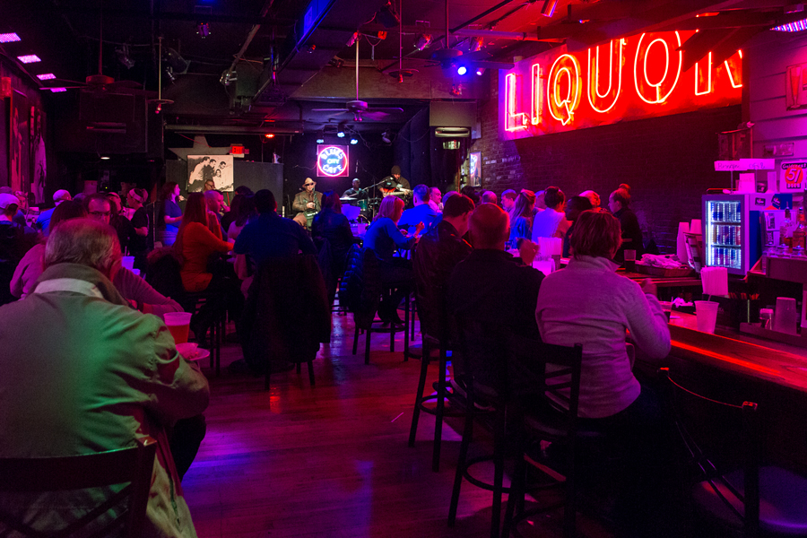


 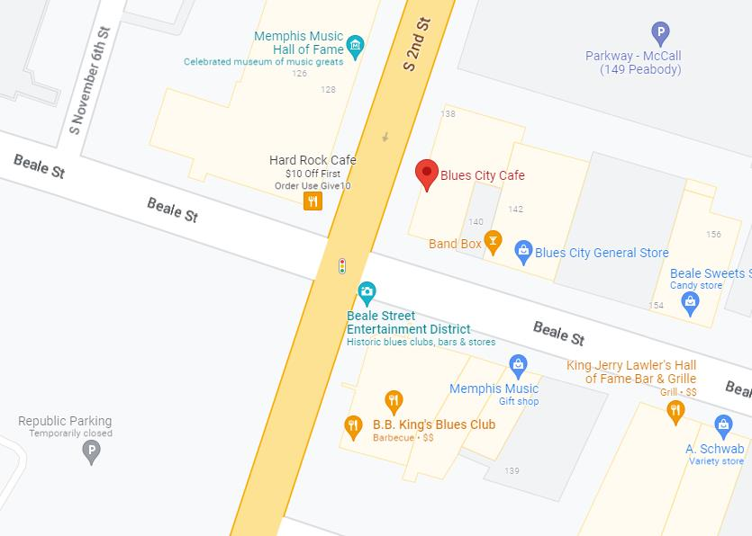
nd
Of A Great Day
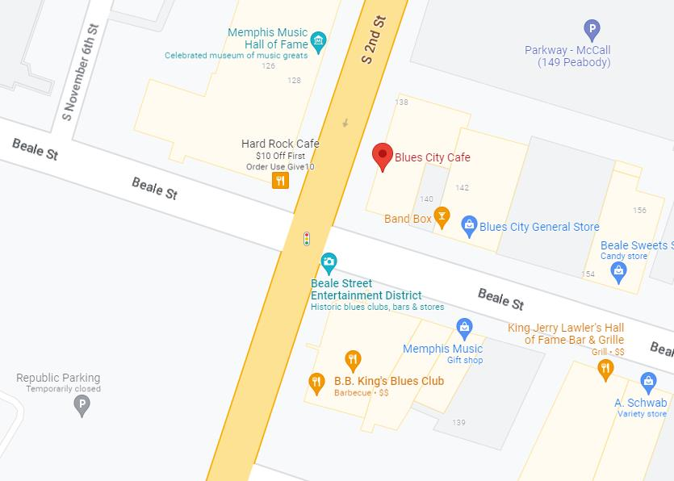
nd
Of A Great Day
When we left the cafe we stopped next door to check out the gift shop. They have lots of cool items for sale. T-Shirts to Elvis bottle openers. They have a lot of unique items that you won’t find any where else. I bought a cool Johnny Cash T – Shirt. Check it out if you’re there.
Tomorrow we plan to frequent B.B. Kings Club. Back to the Days Inn and goodnight.